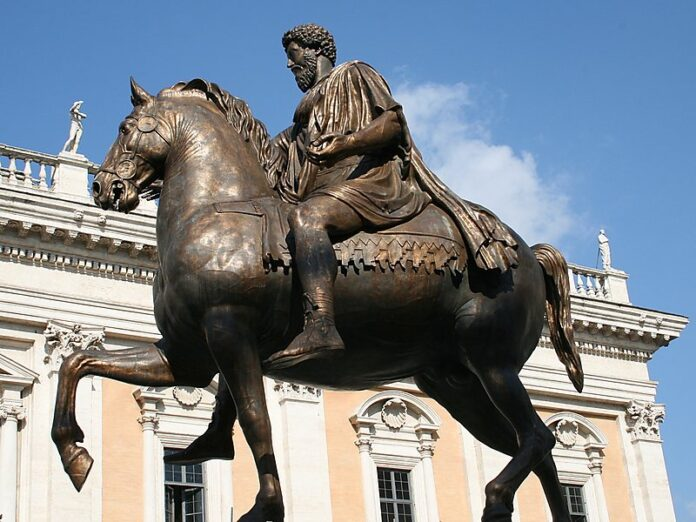

RNN - Roman News Network
Destaques
Arquitetura
Esculturas
Quem somos
Estátua "Colosso de Constantino" é revelada ao público
Exposição de Bustos em Roma
Escultura retrata o castigo de Laocoonte e seus filhos
Augusto de Prima Porta: Uma obra-prima no coração de Roma
Busto de Catão Uticense adorna o Palácio Imperial

Estátua de Marco Aurélio a Cavalo encontra seu novo lar